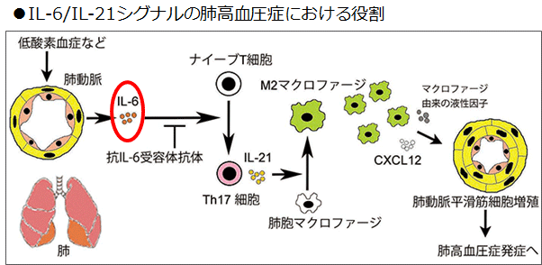
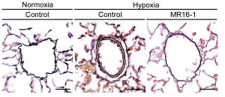

IL-6は肺高血圧症の発症に深く関与する
- ●IL-6と肺高血圧症の発症メカニズムを解明


HPH（低酸素負荷誘発性肺高血圧症）マウスでは肺動脈壁の肥厚が観察されたのに対して、抗IL-6受容体抗体を投与したマウスでは肺動脈壁の肥厚が抑制されていた。
HPHマウス肺においてIL-21の発現が誘導されたが、抗IL-6受容体抗体を投与したマウス肺では発現誘導が抑制されていた。
IL-6作用阻害により、肺高血圧症モデルマウスでの肺高血圧発症を抑制すること、IL-6作用によりTh17細胞で主に産生されるIL-21が肺高血圧症の病態形成を促進することを発見